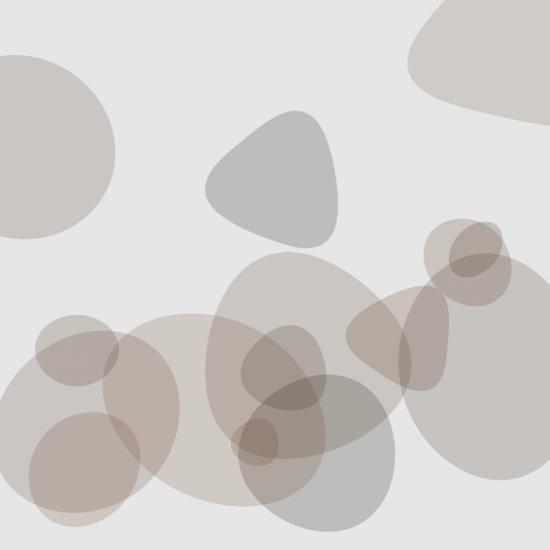

A simple way to prevent overlap would be to keep a list of the bounding boxes of all pebbles added so far. Each time a new pebble is about to be made, test whether or not its area would intersect with any of the existing bounds. If there's an overlap, don't draw the pebble and move on to another possible pebble.
You can get the bounding box parameters of any Bezier path this way:
a = any_function_that_makes_a_path(arg_x,arg_y,arg_width,arg_height,etc)
b = a.bounds
o = b.origin
s = b.size
x = o.x
y = o.y
width = s.width
height = s.height
# More compactly / uglier...
x,y,width,height = a.bounds.origin.x,a.bounds.origin.y,a.bounds.size.width, a.bounds.size.height
The limitation of this method is that it limits you to rectangular exclusion areas.
Whoops, I completely forgot about a much simpler way of testing for intersection -- the "intersects" method that comes with each Nodebox bezier path.
If you have two paths, path_a and path_b , you can just try:
path_a.intersects(path_b)This will return a boolean saying whether or not they overlap. Whew, much more elegant. :)
you could start form the code that I posted here
http://www.nodebox.net/code/index.php/shared_2008-08-07-12-55-33
I'm also planning to implement a versione with svg paths instead of plain circles.
ciao
Giorgio
Giorgio: This page is currently empty. :-(
I've fixed the link. My mistake related to an update of the forum software.

Pebbles
Posted by Enrique P on Aug 03, 2008
I'm new to NodeBox and after playing around with the Ovals.py demo file, I ended up with this nice pebble generator.
Thanks //eIf you have any ideas to improve this, please do. For example, how could we avoid the pebbles from overlapping and/or stay in the format?